现在我回到本书主题，来考虑候选菜单由策略选项组成的情况。我把这些选项称为行为，比如作出一个或高或低的拍卖报价。这是博弈论的框架。但我将侧重于研究当你一个人进行选择的时候，怎样才是理性的，而博弈论则关注我们应该如何以某种共同稳定的方式进行各自的选择。
在一个策略框架里，你在选择你的行为的时候，知道我也将独立选择某个行为，而结果将取决于我们各自的选择。你必须在这种情况下作出你的选择。
在开始前，我们要先了解互知信息的概念。互知信息不同于共同信息。如果我们各自知道某件事，它就属于共同信息。如果我们不但各自知道某件事，而且知道对方知道这件事，知道对方知道我们知道他知道这件事，依此类推，这样的信息就属于互知信息。试举一例说明互知信息和共同信息的区别。假设你我各自发到一张牌。两张牌的花色都是红色，但我们并不知道：我们各自只知道自己牌的花色。此时，发牌人先问我，然后问你，是否知道对方牌的颜色。显然，我们都回答不知道。发牌人随即告诉我们至少其中一张牌是红色的，然后他重复了刚才的问题。我再次回答不知道。但是你一听到我的回答，就会意识到我的回答表明我手中的牌肯定不是黑色，因此你推断出我的牌是红色的，并且回答说你知道。这个例子的要点在于当你被告知某个你已经知道的信息（至少一张牌是红色的）之后，你的回答变了，从否定变为肯定。改变的理由是你所获得的信息从共同信息变为互知信息。
一个策略问题的所有细节都属于互知信息，包括：我们各自所选择的行为，产生的结果，以及我们各自（根据第三章的结果）对此所指定的效用。互知信息还包括我们各自都理性地作出选择，这一点尚待具体探讨。
举一个策略问题的例子。假设在一次拍卖中，你我各自作出一个封闭报价。拍卖品是一瓶价值为100美元的酒。为简化问题，只允许两种报价：高价96美元和低价94美元。在我们各自递交报价后，拍卖师打开报价，将酒交给报价更高的人。随即报价者按所报价格付款给拍卖师。如果双方报价相等，则报价师将酒平均分给两人，同时两人各自支付一半报价。很显然，你每次报价的所得取决于我的报价，反之亦然。如果你报高价，我报低价，则你的所得为100－96美元，即4美元。如果你报低价，我报高价，你的所得为0，因为你的报价没有被接受。如果我们都报高价，则你的所得为0.5×4美元，即2美元。如果我们都报低价，则你的所得为0.5×6美元，即3美元。我的所得也可以这样计算。你必须要选择究竟是报高价还是报低价。
拍卖的可能结果如下表所示，其中结果“4美元，0美元”代表你的所得为4美元，而我的所得为0美元，依此类推。
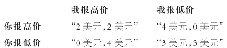
你和我各自对这些结果指派基数效用。比如，我们可以指派效用如下：
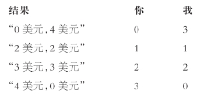
你对于某个使你的收益为0美元而我的收益为4美元的结果指派效用0，依此类推。
这一效用指派方式有三个方面值得一提。第一，你和我各自对整个结果，而不仅是对我们各自的收益指派效用：你可能希望我过得好，因此，在其他条件不变的情况下，你会为某个使我得到更多收益的结果指派更高效用。或者你也可能希望我过得不好，或者根本就不关心我。第二，既然我们指派的是基数效用，它就已经包含了对于风险的态度。因此，如果你选择一个赌局，以各占一半的概率得到结果“2美元，2美元”和“4美元，0美元”，那么在上述效用分配方式下，这个赌局和确定得到结果“3美元，3美元”对你来说是无差异的，因为你的（期望）效用在每种情况下都是2。第三，没有任何说法证明你的效用和我的效用能够以任何方式作比较：我们各自独立指派效用。
我们可以将这两个表格中的信息结合在一起得到一个拍卖问题的收益矩阵 。与以往不同的是，我们用一对效用来代替与之相关的结果“2美元，2美元”，也就是说，你的效用是1，我的效用也是1，依此类推。收益矩阵的行对应你可能的行为，列对应我的行为。如果你选择行的行为，我选择列的行为，我们行为的结果就是每一个行和列组合在一起的条目。条目的格式是：你的效用在前，我的效用在后。现在我们可以将拍卖的例子改写如下。
在某次封闭报价拍卖会上，你和我各自决定报极高或者极低的价格。收益矩阵如下：
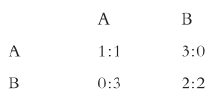
图12《国际跳棋比赛》：奖品坐在正中（马蒂亚·普雷第，约1635）
这个拍卖问题和著名的“囚徒困境”难题实质上是一样的。在囚徒问题里，你和我都被指控犯下罪行。我们被告知如果我们都否认罪行，那么我们各自将被判较轻的罪名，并且接受很轻的惩罚。如果我们都坦白，那么我们各自接受中等程度的惩罚。如果我们两人中只有一个人坦白，那么他就会被释放，并且成为证人指控另一个人。被指控的人将受到严厉惩罚。在我们可以沟通之前，我们被关在隔离的牢房里。你必须选择究竟是坦白还是否认。假定我们每个人只关心自己的惩罚，我们各自为严厉的惩罚指派效用0，为中等程度的惩罚指派效用1，为很轻的惩罚指派效用2，为无罪释放指派效用3。显而易见，这个问题的收益矩阵和刚才的拍卖问题是一样的，只不过把几个名称换了而已。
来考虑下面的例子（我将不再为这个例子以及随后的其他一些例子来编故事）。
你和我各自选择一种树：你可以选白蜡树、山毛榉或栗子，我可以选白蜡树或山毛榉。收益矩阵如下：
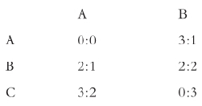
当然，你不会知道我将选择哪个或哪些行为，甚至不知道我将以什么样的概率来选择每个行为。但是，如果你知道这些概率，你的选择就很简单：你将在给定这些概率的情况下，选择能够将你的期望效用最大化的行为。这一行为被称为你对于这些概率的最佳反应 。假设在本例中，你被告知我将以概率0.5选择A（否则选B），那么如果你选择A，你的期望效用就是：（0×0.5）+（3×0.5），等于1.5。如果你选择B，那么期望效用就等于2。如果你选择C，期望效用等于1.5。于是你选择B，也就是说B是你对于这些概率的最佳反应。
现在假设你仅仅被告知我的潜在行为 ，即我可能选择的行为。总的来说，把这些行为和不同概率联系在一起，就会得到不同的最佳反应。比如，如果在上例中，你被告知我将以概率0.2而不是0.5选择A，那么你的最佳反应将变为A；如果你被告知我将以概率0.8选择A，那么你的最佳反应就将变为C。对于我的潜在行为，你的可信反应 是对于其中一些概率的最佳反应。在本例中，对于我的潜在反应A或B，你的可信反应是A、B和C。
最佳反应和可信反应可以用来研究理性。不妨举个例子说明看似有违理性的选择，比如在拍卖的例子中你如果选择B。B的问题出在对于我的任何潜在行为，它都不是最佳反应。不管你是否被告知我将选择A，或选择B，或者可能随机选择其中之一，你的唯一的可信反应都是A。
下面的例子提供了一个更为复杂的案例来说明有违理性的选择。
你和我各自选择一种花：我们可以各自选择乌头、毛茛或连香报春花。收益矩阵如下：
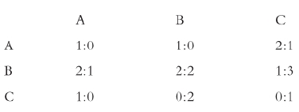
假设在本例中你选择B。这里的问题不太明显。表面看来，你的选择无可挑剔：不管我选A或B，你选B都是一个可信反应。但是你必须问自己，我是否会选择A或B。显然，我不会选择A，因为对于你的任何选择，A都不是我的可信反应。那么我可能选择B吗？如果我这么做，那么我不得不相信你将选C，因为对于你选A或B，我选B都不是可信反应。但我知道你不会选C，因为对于我的任何选择，你选C都不是可信反应。结果是，你知道我会排除A与B来选C。但是你选B不是我选C的可信反应。因此，你选择B看起来违背理性。
理性行为 是可以通过一连串可信反应论证来检验其合理性的行为，正如在上例中那样。在策略问题里，你不知道我将选择什么。但是，你可以推断出关于我的行为的一些信息，因为你知道我只会选择一个可信反应。特别是，你可以推断，我的任何选择将是我在推断出你的选择之后所作出的可信反应。更进一步，因为你知道我知道你只会选择一个可信反应，你会预期我将作出类似的推断。确实，你应该预期到我会预期到你将作出类似推断，依此类推。理性行为是从这条推理链中产生的行为：你的行为是理性的，如果它是你针对我的可信反应所作出的可信反应；而我的可信反应又是针对你的可信反应所作出的；你的可信反应又是针对我的可信反应所作出的……注意理性本质上是和个人相关的概念。在拍卖的例子里，如果我们各自选择B而不是A，那么我们将各自变得更好：对于个人来说是理性的选择，可能对于集体来说并非理性。
在花的例子里，我们可以用一张表来说明这一推理链。表中每一行给出选择者、他所面对的另一个人的潜在行为，以及选择者对此的可信反应。
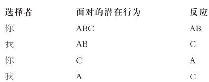
直到你我的可信反应都不再随着推理的进行而改变，这一推理链宣告结束。如果我们到达某一点时，都只选择一个行为，如上例所示，那么很显然这就是推理链的终点。我们应该注意到，我们是从你的而不是我的反应开始推理的：但是显而易见，如果我们从我的反应开始也会得到同样的结果。因此你的理性行为是A（而我的是C）。
显然，你将总能作出某个理性行为。但是，如下例（这个例子是“在纽约见面”的原始版本）所示，你可能有不止一个理性行为。
你和我约好见面，但忘了确定究竟是在A点还是在B点见面。因为我们各自都想见面，但不在乎在哪里见面，我们的收益矩阵可以写成下面的形式：
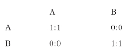
如果你被告知我选A的概率大于0.5，那么你的最佳反应就是A。如果你被告知这一概率低于0.5，你的最佳反应就是B。因此，因为你的可信反应是你对于某些概率所作的最佳反应，对于我的潜在行为A或B，你的可信反应就是A和B。因为我的可信反应也是一样，所以对于我们每个人来说，理性行为一定是A和B两者（其实，我们应该已经从本例的对称性上判断出这一点）。
为了概括理性的特征，我们需要“优势”这一概念。在你的两个行为中，如果不管我选择什么，你都偏好第一个，那么该行为对第二个占优势。相应地，你的第一个行为所带来的效用大于第二个。例如，在拍卖的例子里，你的行为A相比B占优势。优势行为还有更为复杂的一种形式。试想，你不再选择某个特定行为，而是能够选择多个行为的组合，或者说，针对你行为的一个赌局。这意味着，除了单选X或Y之外，你还可以选赌局“以概率0.5得到X，以概率0.5得到Y”。如果无论我选择什么，你从赌局得到的期望效用都大于你从特定行为所得到的期望效用，那么涉及多个行为的赌局相比某个特定行为就占优势。考虑下面的例子。
你和我各自必须选择一种昆虫：你可以选蚂蚁、蜜蜂或者毛虫；而我可以选蚂蚁或蜜蜂。收益矩阵如下：
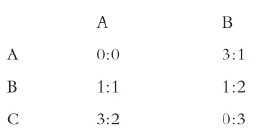
在本例中，你的赌局“以概率0.5选A，否则选C”相比行为B占优势：无论我选择什么行为，你从赌局获得的期望效用都是1.5，而你从B获得的期望效用是1。如本例所示，一个行为可能相比一个行为组合占劣势，即使相比组合中的任何一个行为，它都不占劣势：你的行为B和A或C相比，都不占劣势。
如果一个行为和任何组合（包括任何简化组合，即任何行为）相比都不占劣势，那么该行为是非劣势的 。换句话说，如果无论我选择什么行为（或行为组合），没有任何行为能给你更高的（期待）效用，你所选的行为就是非劣势的。如你所料，一个行为如果是最佳反应，它一定是非劣势的。既然要成为理性行为必须是最佳反应，这就意味着理性行为必须是非劣势的。但是，反之则不一定成立：一个行为可能是非劣势的，但却不是理性的。
要明白这一点，让我们回到树的例子。收益矩阵如下：
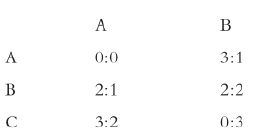
本例中你的行为C是非劣势的，但它显然不是理性的。
在树的例子中，你的行为C不是理性行为，因为尽管它是非劣势的，但是（1）如果我的行为A从矩阵中被删除，它就变成劣势行为；（2）删除A很合理，因为它是劣势的（和我的行为B相比）。这就是说，你的行为C逃不过对劣势行为的反复删除，或者说它并非反复非劣势的 ：换句话说，你的行为相比我的任何行为，不占劣势；同样，我的行为相比你的任何行为，不占劣势……依此类推，反复检验。
要说明反复删除法，让我们回到花的例子。收益矩阵如下：
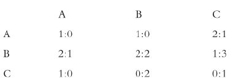
在本例中，我们可以如下表所示，反复删除行为。表中每行给出选择者、选择者所面对的对方行为，以及在该阶段选择者删除的行为。
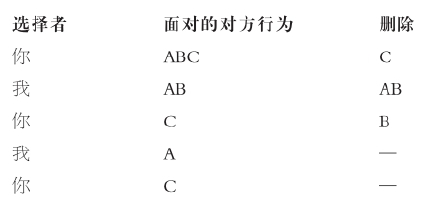
当我们都不能再继续删除任何一个行为时，整个过程宣告结束。在本例中，你唯一剩下的行为是A（而我的是C）。注意第一次我选择删除A和B。显然如果我在这一步只删除A或B，我们也会取得同样的结果，尽管可能花费更多步骤。显而易见，和获取理性行为的过程一样，如果我们从我开始而不是从你开始进行删除，还是会取得同样的结果。
反复删除劣势行为的过程显然和获取理性行为的过程有很多共同点。在花的例子里这两个过程得到同样结果，这并非偶然：这适用于一般情况。因此我们可以有完整的概述：当且仅当选择是反复非劣势时，它是理性的。
尽管颇有吸引力，我们在使用被称为“弱优势”的概念来代替“优势”概念时，还是要小心。如果对于你的两个行为，（1）不管我选择什么行为，你从第一个行为得到的效用不少于从第二个得到的效用；（2）对于我的至少一个行为，你从第一个行为得到的效用大于从第二个得到的效用，那么你的第一个行为和第二个行为相比就占弱优势。考虑下例。
你和我各自必须选择一种鸟：你可以选反嘴鹬、乌鸫或乌鸦，我可以选反嘴鹬或乌鸫。收益矩阵如下：
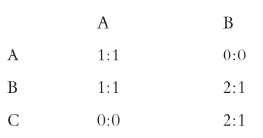
在本例中，你的行为B相对于你的行为A和C都是占弱优势（但不占优势）。
我们在反复删去弱劣势行为时，就不像反复删除劣势行为时那么有自信。我们对理性的概述告诉我们，反复弱非劣势行为和理性行为不一样。而且，删除的顺序也会影响结果。如果在上例中，你删除A，那么我将删除A：你将单选B或C，并得到效用2。但是，如果你删除C而不是A，那么我将删除B：你将单选B或C，并得到效用1。尽管如此，如果我们已经删除所有劣势行为，那么避免弱劣势行为的做法就有一定道理。
在此出现一个问题：以理性方式行事和以稳定方式行事，这两者之间究竟有没有联系？如果我们各自以理性方式行事，我们的行为是否稳定 ？如果我们的行为稳定，它们必须是理性的吗？
要继续研究，我们需要考虑我们的行为究竟怎样才算是稳定的。如果你的行为是你对我的行为的最佳反应，同时我的行为也是我对你的行为的最佳反应，我们的行为就是稳定的。（对一个行为的最佳反应就是在给定该行为的情况下，对简化概率的反应。）如果是这样，那么当我们二人都没有单方面动机去作出改变时，我们的一对行为就是稳定的。一对稳定行为也被称为“纳什均衡”，得名于约翰·纳什（生于1928年），他是诺贝尔经济学奖获得者、经济学家和数学家（同时也是电影《美丽心灵》的主人公）。注意，尽管我们可以问你的单个行为在孤立情况下是否具有理性，我们却不能问你的单个行为是否稳定：稳定性是只属于成对行为（你的一个行为和我的一个行为）的属性。
要说明稳定行为，让我们回到拍卖的例子。收益矩阵如下：
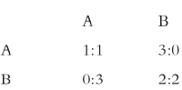
在本例中我们各自选择A是稳定的，因为如果你知道我将选A，那么你就会选A；并且如果我知道你选A，我就会选A。
如拍卖的例子所示，且几乎可以由定义直接得出，稳定行为是理性的。但是，反之则不成立：并非所有成对的理性行为都是稳定的。下例将说明这一点。
你和我各自选择一种动物：我们可以各自选择驴子、野猪或者母牛。收益矩阵如下：
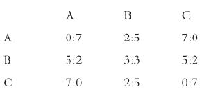
显而易见，在本例中唯一的稳定行为是你选择B，我选择B，但是每个可能的行为对你来说（同时对我来说）都是理性的。
理性、优势和稳定性之间的联系如图13所示。
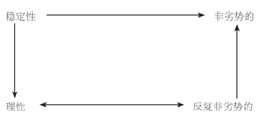
图13战略选择示意图：双箭头代表对等，单箭头代表隐含
在讨论稳定性时，我的主要目的是查明以理性行事和以稳定方式行事之间的联系，而不是具体研究稳定性。但是，我要简单提一下和稳定性概念相关的两个问题。
第一个问题是可能存在许多互不兼容的稳定行为。见面的例子可以说明这一点。收益矩阵如下：
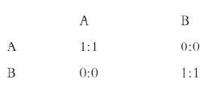
在本例中，你选择A且我选择A是稳定的，因为我们中没有人会选择B，如果他知道另外一人将选择A。同样，你选B且我选B是稳定的。因此，我们有多对稳定行为。如果你选择某一对行为中你的部分，而我选择另一对中我的部分，如果我们这样的选择也是稳定的，那么存在多对稳定行为这一现象就无关紧要。但事实并非如此：你选A且我选B，这一对行为并不稳定。
见面例子的另一种阐释强调了这一点。A可以重新解释为靠左行驶，B可以解释为靠右行驶；收益矩阵保持不变。如果我们每个人都靠左行驶，这是稳定的；每个人都靠右行驶，也是稳定的；但如果我靠左而你靠右行驶，我们可能都活不久。
注意：在本例中每个稳定配对都不涉及弱劣势行为：如果存在弱劣势行为，或许合理的做法是避免选择它们。还要注意：在理性行为中不可能出现不兼容的问题：你可能有多于一个理性行为，我也一样，但是多对行为在整个过程中不会产生影响。
稳定性概念的第二个问题在于，可能不存在稳定行为。下面的例子可以说明这一点（这个例子最早被称为“便士配对”。）
你和我各自选择一张牌，然后给对方看，牌上画着天使或野兽。如果我们牌上的画是一样的，我付你100美元，如果不一样，你付我100美元。因为我们都喜欢钱，我们可以把收益矩阵写成：
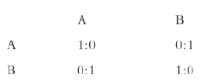
显然，我们都选择同样的行为不可能是稳定的，因为如果我知道你的行为，我将改变我的；同样的，我们各自选择不同的行为也不可能是稳定的，因为如果你知道我的行为，你将改变你的。因此，不存在稳定行为。这一问题不可能在理性行为中出现：如我们所见，你总是有着某种理性行为。
但是在一定程度上，可以通过允许选择个人行为和赌局（正如我们在讨论优势的时候所做的）来得到稳定行为。在这种情况下，一对稳定的行为（有时在混合策略里被称为“纳什均衡”）具备像以前那样的属性：如果你的行为是你针对我的行为的最佳反应，且我的行为是我针对你的行为的最佳反应，那么我们的行为就是稳定的。如果我们允许选择赌局，那么在配对的例子中就会出现一对稳定行为。显而易见，你和我各自选择赌局“以概率0.5选A，其余选B”是稳定的，实际上也是唯一的一对稳定行为。事实上，如果我们允许选择赌局，那么所有的策略问题都有稳定行为。
不仅是原先没有稳定行为的地方出现了稳定行为，而且现在新的稳定行为可以在原有的基础上继续出现。回想一下，在见面的例子里，可以把A重新解释为靠左行驶，把B重新解释为靠右行驶，存在两对稳定行为：我们都靠左行驶和我们都靠右行驶。但如果我们允许选择赌局，那么还有第三对稳定行为：即我们各自独立掷硬币，如果正面向上就靠左驾驶，如果反面向上就靠右驾驶：这是避免车祸的另一个解决办法。
如果在此新的意义上重新阐释稳定性，情况依然是：稳定行为是理性的。同样，这几乎可以直接从定义中推导得出。而且，并非所有成对理性行为都是稳定的。要明白这一点，回到动物的例子。收益矩阵如下：
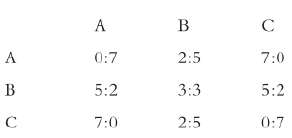
显而易见，你和我都选择B是唯一的稳定配对，即使在我们都可以选择赌局的情况下。但是，如我们所见，每个可能的行为都是理性的。
因此，稳定性的概念可能是有歧义的，比如可能存在多个稳定配对；或者是空洞的，比如可能不存在稳定配对，且我们不允许选择赌局；或者有些晦涩，比如唯一的稳定行为需要使用赌局。
如果把时间纳入考虑，情况就会有所改变。再次回到拍卖的例子。收益矩阵如下：
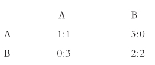
假设现在我们必须各自连续两天而不是一次性作出选择。在第二天我们各自都知道对方在第一天所作的选择。现在你是从下列八个行为中进行选择：
如果我今天选A，你今天选A 且明天选A
如果我今天选B，你今天选A 且明天选A
如果我今天选A，你今天选A 且明天选B
依此类推。（我的行为是类似的。）显而易见，你仅有的两个（对等的）理性行为是“如果我今天选A，那么你今天选A且明天选A”和“如果我今天选B，那么你今天选A且明天选A”。也就是说，不管我选什么，你都是今天选A且明天选A。因此，没有重大变化。
现在假设我们各自连续一百天作出选择。你可能会觉得，在前面某一天值得选B，寄希望于这样可以培养我们之间的信任，从而我将开始选B，这对我们两人都有利。但是，你这么做完全是错误的。在最后一天，不存在培养信任的问题，所以我们各自将像我们只选一次那样作出选择，也就是说，我们各自选A。那么在第99天，也不存在培养信任的问题，因为我们各自都知道对方在最后一天的选择：再次，我们各自选A。重复这样的推论，每天我们将各自选A。同样没有任何改变。如果我们在任意有限的天数内作出选择，同样的逻辑都适用。
但是，如果我们在无限多的天数内作出选择，这样的逻辑就不成立，因为现在不存在开始推理过程的最后一天。事实上，如果我们无限地选择，我们每天各自选B，不仅对个人是理性的，而且对双方也是稳定的（尽管可能有其他稳定结果）。情况与有限重复时（因此也是与时间无关时）有了巨大改变。在有限重复时，我们每天各自选A是唯一的理性结果。
从这个结果中得出一般推论，我们可以说，虽然在有限重复的场景中，个人的理性行为不一定是集体理性的，但在无限重复的场景中，这种情况可能（尽管并非必要）成立。因此，无限重复可能将竞争转化为合作。这一结果是民俗的重要部分，因此它被称为“民间定理”。大卫·休谟（我们在第一章中已经提到过他）注意到：
个体理性与集体理性之间的张力产生了许多混淆。其中一些体现在双胞胎的明显悖论中。有人声称，因为拍卖例子是对称的，你和我可以被看做是双胞胎以同样方式进行选择。因为你知道这一点，所以你报低价：你知道我总是会做和你一样的事，并且我们都报低价好于我们都报高价。为对称性理论辩护的尝试常常是基于所谓的海萨尼信条 ，得名于诺贝尔经济学奖得主、哲学家约翰·海萨尼（生于1920年）。这一信条声称具有相同信息和经验的两个人将必然以同样方式行事。如果把经验界定为包括一切使人与众不同的特点，那么这一看似正确的信条（我将在下一章继续讨论）就是同义反复的。但这一信条意义有多重要呢？你对这一信条以及上面提到的明显悖论应该有自己的观点。
在第四章里，我考虑了是否我们能借助无知面纱的设想对分配公平有所了解。我现在将借助一个类似的设想：不确定性 面纱 。无知面纱指假装不了解已经决定的事实，比如你是谁；而不确定性面纱指对尚未发生的事件真的缺乏了解，比如谁将会找到石油。假设你和我各自在寻找石油。我们都从零财富水平开始。如果我们都找到石油，或者都没有找到，我们各自得到同样的财富：在这两种情况下，财富分配的问题都不那么吸引人。试考虑只有一个人找到石油的情况。我们不知道谁发现石油，在这种情况下，发现的人将得到200万美元，而另一个人则一无所获。
我将假定我们各自只关心自己的所得，且都是风险厌恶的。为了作具体讨论，我将假定我们各自指派效用如下：
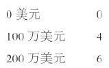
在我们开始之前，也就是，在不确定性面纱背后，我们可以单独选择接受一个再分配协议：任何发现石油的人将与另一个人平均分享收益。如果我们这样做，在其中一人发现石油的情况下，我们将各自确定得到100万美元，从而得到效用4。如果我们不接受这样一个协议，比如我们中任何一个人退出该协议，那么在其中一人发现石油的情况下，我们各自以同样的概率要么得到200万美元，要么一无所获，因此期望效用为3。收益矩阵如下：
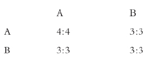
显然，你选择A或B是理性的；同样，我们都选择A或都选择B是稳定的。但是，对我们来说，A相比B占弱优势。因此我们有理由都选择A，从而接受分配协议。
有时候一些人声称，在不确定性面纱背后，每个人可能会选择一个财富再分配协议，这一事实可以支持在面纱一旦揭去后强制进行财富再分配的做法。但是，这一说法有问题。这一说法的另一种解释是：它只是提出了很明显的一点，即厌恶风险的人将自由选择在公道条款下进行投保。对此你应该有自己的解释。
战略选择涉及你从特定行为中进行选择，这些行为的结果取决于你、也取决于我的选择。
在给定概率下，你对于我的潜在行为（即我可能采取的行为）的最佳反应是某个能在这些概率下最大化你的期望效用的行为。
对于我的潜在行为，你的可信反应是你在相关概率下对此作出的最佳反应。
如果你的行为是你对于我的可信反应的可信反应，且我的可信反应是对你的可信反应的可信反应……反复依此类推，那么你的行为就是理性的。
不管我选择什么行为（或行为组合），如果没有其他行为能给你更高的（期待）效用，那么你的行为就是非劣势的。如果你的行为相比我的任何行为都不占劣势，且我的行为相比你的任何行为都不占劣势……反复依此类推，那么你的行为就是反复非劣势的。
当且仅当一个行为是反复非劣势的，该行为是理性的。
如果你的行为是对我的行为的最佳反应，且我的行为也是对你的行为的最佳反应，那么这对行为，包括你的一个行为和我的一个行为，就是共同稳定的。
如果一对行为是共同稳定的，那么这对行为中的每一个都是理性的，但可能出现每个行为是理性的，而配对却并非共同稳定的情况。
可能存在多对互不兼容的共同稳定行为，或者不存在任何一对稳定行为。